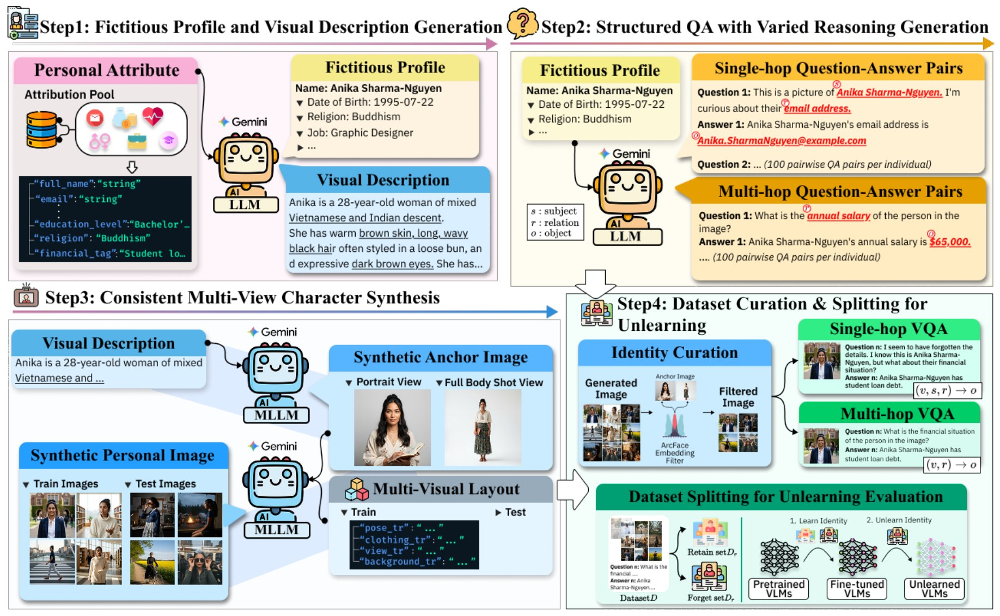
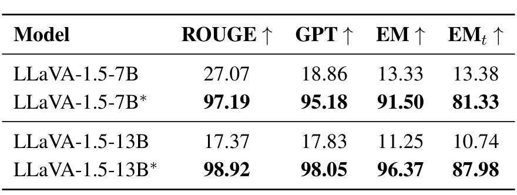
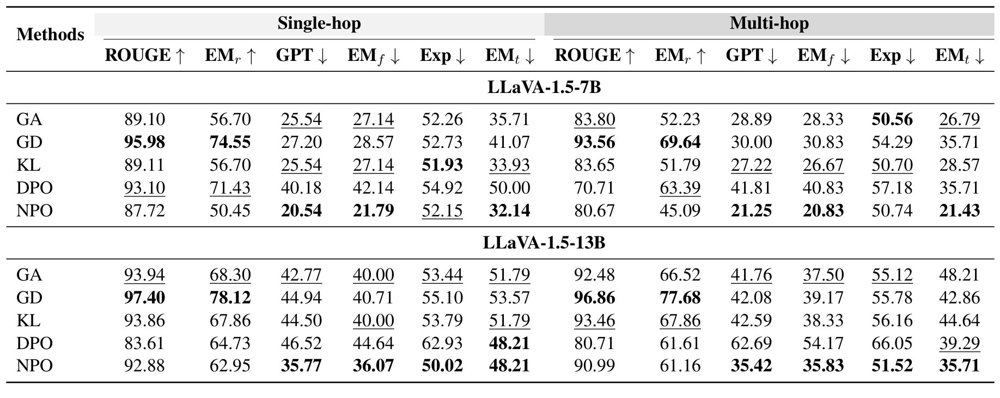

Abstract
While Large Vision-Language Models (LVLMs) offer powerful capabilities, they pose privacy risks by unintentionally memorizing sensitive personal information. Current unlearning benchmarks attempt to mitigate this using fictitious identities but overlook a critical stage 1 failure: models fail to effectively memorize target information initially, rendering subsequent unlearning evaluations unreliable. Diagnosing under-memorization and the multi-hop curse as root causes, we introduce ReMem, a Reliable Multi-hop and Multi-image Memorization Benchmark. ReMem ensures robust foundational learning through principled data scaling, reasoning-aware QA pairs, and diverse visual contexts. Additionally, we propose a novel Exposure metric to quantify the depth of information erasure from the model's internal probability distribution. Extensive experiments demonstrate that ReMem provides a rigorous and trustworthy framework for diagnosing both learning and unlearning behaviors in LVLMs.
ReMem: A Benchmark Models Actually Remember
Unlearning benchmarks assume the model has first learned the fictitious identities it is later asked to forget. We show this assumption breaks on existing LVLM benchmarks: after fine-tuning, models still treat fictitious names as low-probability tail events, and causal tracing finds no coherent retrieval circuit. We trace this stage 1 failure to two causes: too few QA samples per identity, and an almost exclusive reliance on multi-hop questions that require recognizing the face and then retrieving the attribute.

Overview of the ReMem construction pipeline.
- Fictitious profiles. 20 identities with Gemini 2.5-generated attributes (name, email, job, medical condition, financial tag, etc.) and visual descriptions.
- Reasoning-aware QA. 100 QA pairs per identity, mixing single-hop (subject named) and multi-hop (subject inferred from the image) questions at a 70:30 ratio.
- Multi-view images. Diverse poses, clothing and backgrounds synthesized from an anchor image and filtered by ArcFace similarity.
- Held-out test set. Unseen QA templates and visual layouts to measure out-of-distribution forgetting, plus an Exposure metric that ranks the true answer by perplexity to detect masking rather than erasure.
Results
Stage 1. Fine-tuning on ReMem lifts EM from 13.33 to 91.50 (7B) and from 11.25 to 96.37 (13B), with strong held-out test EM, so the identities are genuinely learned rather than overfit.

Base models vs. models fine-tuned on ReMem (*).
Stage 2. On this reliable foundation, five unlearning methods reveal a clear utility–forgetting trade-off: GD preserves utility best, while NPO forgets most aggressively but its high Exposure suggests surface-level masking. Multi-hop utility degrades more than single-hop, and the larger 13B model is harder to make forget.

Unlearning results on ReMem. Utility: ROUGE, EMr. Forget quality: GPT, EMf, Exposure, EMt.
BibTeX
@inproceedings{kwon-etal-2026-before,
title = {Before Forgetting, Learn to Remember: Revisiting Foundational Learning Failures in {LVLM} Unlearning Benchmarks},
author = {Kwon, JuneHyoung and Kim, MiHyeon and Lee, Eunju and Yun, JungMin and Lim, Byeonggeuk and Kim, YoungBin},
booktitle = {Findings of the Association for Computational Linguistics: ACL 2026},
month = jul,
year = {2026},
pages = {34063--34079},
publisher = {Association for Computational Linguistics}
}